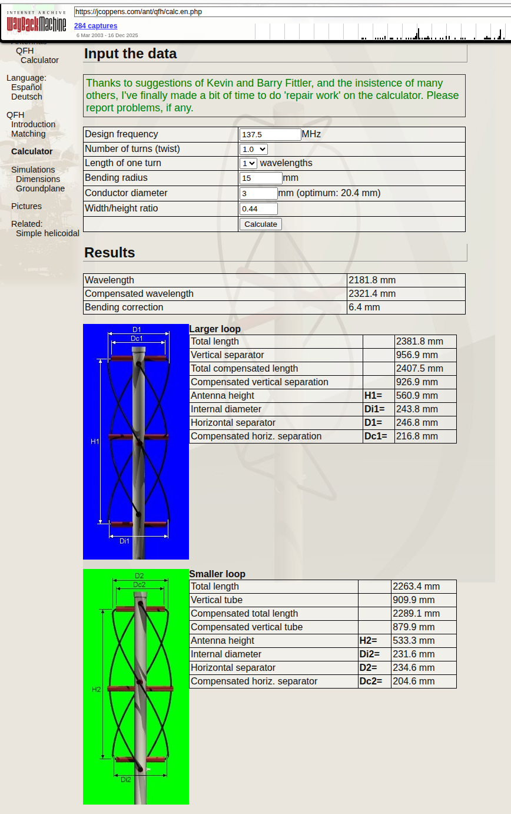

import numpy as np
import pandas as pd
# from scipy.constants import speed_of_light
speed_of_light = 3e8 # m/s to match original for testingQFH calcuation verification
This is based on https://jcoppens.com/ant/qfh/calc.en.php which now seems to be down but can be found on the internet archive at https://web.archive.org/web/20250915134142/https://jcoppens.com/ant/qfh/calc.en.php.
For testing of javascript in original, I used this page https://jsconsole.com/
Python imports
Compute wavelength. Original website used \(c=3\times 10^8\) m/s. For testing I’m using that value here.
Design parameters
frequency_MHz = 137.5 # antenna operating frequency, freq
number_turns = 1.0 # number of turns to antenna, turns
length_of_one_turn = 1.0 # measured in wavelengths, [0.25, 0.5, 0.75, 1.0] rwavel
bending_radius_mm = 15.0 # wrad
wire_diameter_mm = 3.0 # diam? , wdiam ?
width_height_ratio = 0.44 # ratioResults
Wavelength in free space
wavelength = speed_of_light/(frequency_MHz*1e6) # meters, wavelCompensated wavelength
This is a correction for the size of the wire.
wire_diameter_effective_mm = wire_diameter_mm
if wire_diameter_effective_mm > 15.0:
wire_diameter_effective_mm = 15.0def delta_length(diam):
# this is a table of corrections copied directly from qfhcalc.js
# the index appears to translate directly to the wire diameter in mm
tbl = np.array([1.045, 1.053, 1.060, 1.064, 1.068, 1.070, 1.070, 1.071,
1.071, 1.070, 1.070, 1.070, 1.070, 1.069, 1.069, 1.068,
1.067])
intv = int(np.floor(diam))
print(intv,tbl[intv])
dl = tbl[intv] + (tbl[intv+1]-tbl[intv])*(diam-intv)
return dl
compensated_wavelength = wavelength * delta_length(wire_diameter_effective_mm) # wavelc3 1.064Bending correction
bending_correction_mm = 2*bending_radius_mm - np.pi*bending_radius_mm/2.0 # bcorrOptimal conductor diameter
This is a confusing calculation in the original because it depends upon the conductor diameter.
# factor of 1000 converts meter to millimeter
# factor of 0.0088 is in original code, don't know what it is
optimal_diameter_mm = 0.0088 * compensated_wavelength * 1000.0Larger loop
This is also referred to as loop 1
total_length_lg = compensated_wavelength * 1.026 # total1
total_compensated_length_lg = total_length_lg + 4 * bending_correction_mm/1000 # total1c
horizontal_separator_lg = 0.5 * total_compensated_length_lg/ \
(1 + np.sqrt(1/width_height_ratio**2 + (number_turns*np.pi)**2)) # rad1, D1=
horizontal_compensated_separator_lg = horizontal_separator_lg - 2*bending_radius_mm/1000.0 # rad1c, D1C=
vertical_separation_lg = (total_compensated_length_lg - 2*horizontal_separator_lg)/2 # vert1
vertical_separation_compensated_lg = vertical_separation_lg - 2*bending_radius_mm/1000.0 # vert1c
internal_diameter_lg = horizontal_separator_lg - wire_diameter_mm/1000.0 #idiam1, Di1=
height_lg = horizontal_separator_lg / width_height_ratio # height1, H1=data_lg = {
'Names': [
'Total length',
'Vertical separator',
'Total compensated length',
'Compensated vertical separation',
'Antenna height',
'Internal diameter',
'Horizontal separator',
'compensated horizontal separation',
],
'Labels' :[
'',
'',
'',
'',
'H1=',
'Di1=',
'D1=',
'Dc1=',
],
'Values': [
total_length_lg,
vertical_separation_lg,
total_compensated_length_lg,
vertical_separation_compensated_lg,
height_lg,
internal_diameter_lg,
horizontal_separator_lg,
horizontal_compensated_separator_lg,
]
}
df = pd.DataFrame(data_lg)
df| Names | Labels | Values | |
|---|---|---|---|
| 0 | Total length | 2.381812 | |
| 1 | Vertical separator | 0.956978 | |
| 2 | Total compensated length | 2.407565 | |
| 3 | Compensated vertical separation | 0.926978 | |
| 4 | Antenna height | H1= | 0.560918 |
| 5 | Internal diameter | Di1= | 0.243804 |
| 6 | Horizontal separator | D1= | 0.246804 |
| 7 | compensated horizontal separation | Dc1= | 0.216804 |
Smaller loop
This is also referred to as loop 2. These are basically the same calculations except for the 0.975 factor instead of the 1.026 factor.
total_length_sm = compensated_wavelength * 0.975 # total2
total_compensated_length_sm = total_length_sm + 4 * bending_correction_mm/1000 # total2c
horizontal_separator_sm = 0.5 * total_compensated_length_sm/ \
(1 + np.sqrt(1/width_height_ratio**2 + (number_turns*np.pi)**2)) # rad2, D2=
horizontal_compensated_separator_sm = horizontal_separator_sm - 2*bending_radius_mm/1000.0 # rad2c, D2c=
vertical_separation_sm = (total_compensated_length_sm - 2*horizontal_separator_sm)/2 # vert2
vertical_separation_compensated_sm = vertical_separation_sm - 2*bending_radius_mm/1000.0 # vert2c
internal_diameter_sm = horizontal_separator_sm - wire_diameter_mm/1000.0 #idiam1, Di2=
height_sm = horizontal_separator_sm / width_height_ratio # height2, H2=data_sm = {
'Names': [
'Total length',
'Vertical separator',
'Total compensated length',
'Compensated vertical separation',
'Antenna height',
'Internal diameter',
'Horizontal separator',
'compensated horizontal separation',
],
'Labels' :[
'',
'',
'',
'',
'H2=',
'Di2=',
'D2=',
'Dc2=',
],
'Values': [
total_length_sm,
vertical_separation_sm,
total_compensated_length_sm,
vertical_separation_compensated_sm,
height_sm,
internal_diameter_sm,
horizontal_separator_sm,
horizontal_compensated_separator_sm,
]
}
df = pd.DataFrame(data_sm)
df| Names | Labels | Values | |
|---|---|---|---|
| 0 | Total length | 2.263418 | |
| 1 | Vertical separator | 0.909918 | |
| 2 | Total compensated length | 2.289170 | |
| 3 | Compensated vertical separation | 0.879918 | |
| 4 | Antenna height | H2= | 0.533334 |
| 5 | Internal diameter | Di2= | 0.231667 |
| 6 | Horizontal separator | D2= | 0.234667 |
| 7 | compensated horizontal separation | Dc2= | 0.204667 |
Original

Legend of parameters copied from original
This calculator generates a lot of data! Take care in the use of the information in order not to make mistakes… Here’s a little explanation:
- Design frequency
- Evident?
- Number of turns (twist)
- What’s the twist of the antenna? (normally 0.5 (180 degrees)
- Length of one turn
- A few variations of the antenna exist. Normally the circumference (length of the loop) is 1 wavelength, but 1.5 wavelength and 2 wavelength versions exist.
- Bending diameter
- As it’s impossible to bend the corner abruptly at 90 degrees, this value is needed for the calculations. It’s measured from the bending center to the center of the tube.
- Conductor diameter
- External diameter of the tube or coax cable.
- Diameter/height ratio
- Most frequently this ratio is 0.44, but slightly lower values (0.3 to 0.4) give better horizon coverage.
- Wavelength
- Wavelength, corresponding to the selected frequency.
- Compensated wavelength
- Wavelength, compensated according to the conductor diameter.
- Bending correction
- Correction value needed according to the bending diameter.
- Total length
- Total length of the loop, before compensation.
- Total loop cmpensated length
- Total length of the loop, compensated for the bending effect, and the fact that the loop must be slightly larger (or smaller). This is the amount of tubing necessary for this loop.
- Compensated vertical separation
- Vertical separation (without the ‘bends’).
- Compensated horizontal separation
- This is in fact the horizontal part without the ‘bends’, and corresponds to the horizontal pipe necessary to support the cable.
- Antenna height
- Height of the loop (twisted!).
- Internal diameter
- The diameter of the (imaginary) cylinder on which the loop would be wound.